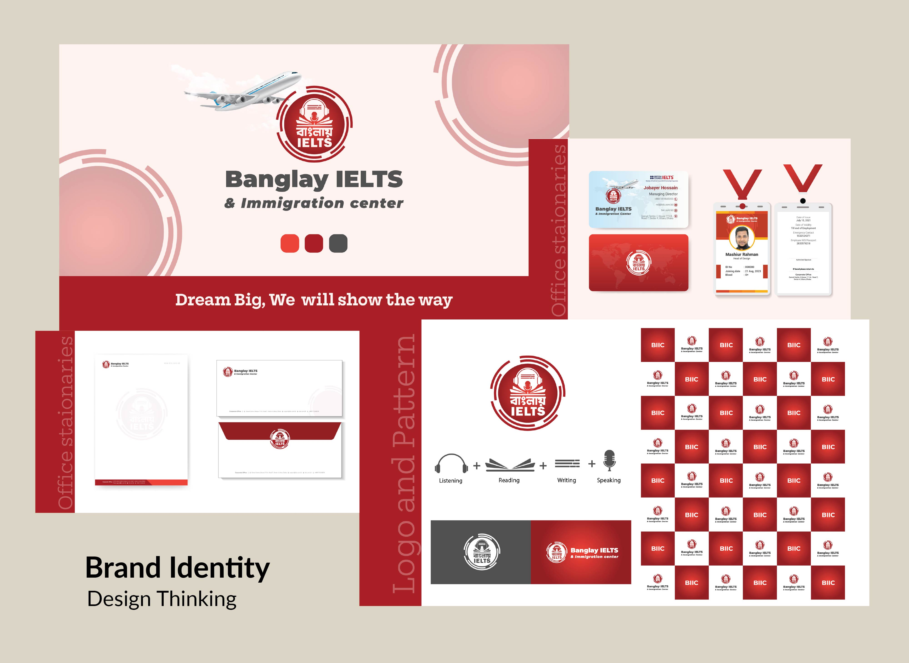
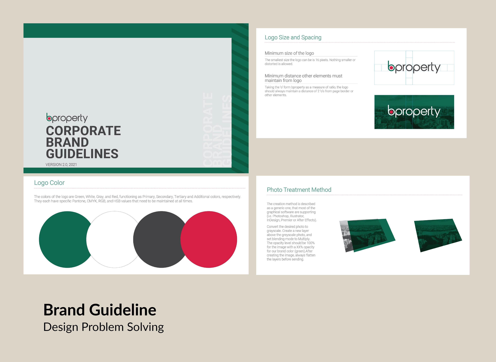

Branding
This section showcases the visual identity systems I've created — from logos and typography to color palettes and brand guidelines. Each branding project is built with purpose, capturing the essence of a business or idea through consistent and memorable design. You’ll find bold concepts, thoughtful symbolism, and a focus on clarity and versatility — all crafted to leave a lasting impression across digital and print platforms.
Branding

